Generating an Extended EMF Model
Top
Previous: Modifying the Editor
Next
Appendix: An Alternative Way of Generating the Model and Editor
If you do not already have the base model "Library" and its editor generated
in separate projects, you can have both the "Library" and "School Library"
models generated into the same set of projects. This can be done either through
a Rose model or through a set of Java interfaces.
Through Rose Model
- Working in the Resource perspective, select the "File/New/Other...".
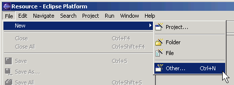
- Create a new EMF Project. Click the "Next" button.

- Give the project a name, for example "schoollibrary2". Click the "Next" button.
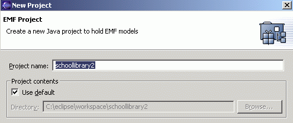
- Select "Load from a Rose Model" and click the "Next" button.

- Click the "Browse" button, locate and open the "schoollibrary.mdl" file. Then click the "Next" button.

- Select both the "library" and "schoollibrary" packages.
This is different from what we did in Step 1 in which we referenced
the "library" model generated previously. Click the "Finish" button.

Through Java Interfaces:
- Create a new Java project. Working in the Java perspective,
select "File/New/Project..." to bring up the New Project dialog.

-
Select "Java Project". Click the "Next" button.

- Give the project a name, for example "schoollibrary2". Click the "Next" button.

- Click
"Add Folder...", click on "Create New Folder..."
and create a "src" sub-folder. Click "Yes" when you are asked to update the
build output folder. Change the build output folder to "schoollibrary2/runtime".
Click the "Finish" button.
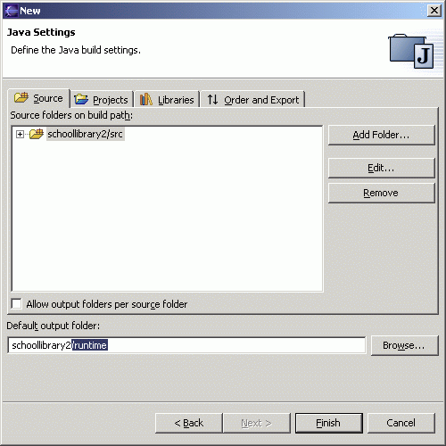
- A "schoollibrary2" project will be created.

- Import the "library" interfaces from "library.zip". With the "schoollibrary2" project selected, select "File/Import..." and select "Zip file".
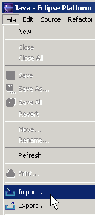
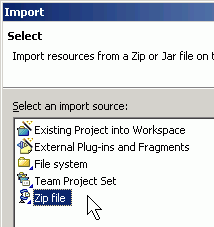
- Locate the zip file and import it into the "schoollibrary2/src" directory. Click the "Finish" button.

- Import the "schoollibrary" interfaces from "schoollibrary.zip" in a similar way.
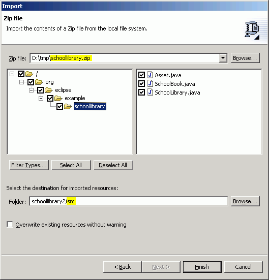
- Now you should have all the required Java interfaces in the project.

- With the "schoollibrary2" project selected, Select "File/New/Others...".
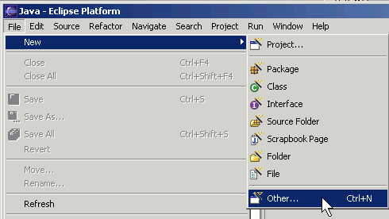
- Select "EMF Models". Click the "Next" button.

- Enter "schoollibrary2/src/model" as the name of folder and "schoollibrary.genmodel" as the file name. Click the "Next" button.
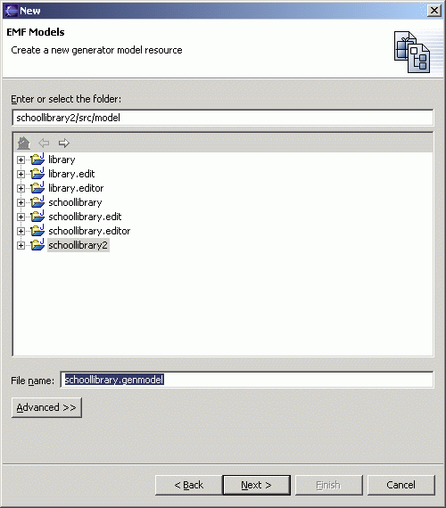
- Select "Load from Java annotations". Click the "Next" button.

- Select both library and schoollibrary package. Click the "Finish" button.

Generating the EMF Model and the Editor
-
The "schoollibrary.genmodel" is now created either through the Rose model or the Java interfaces.
It should appear in the main view. In the Resource perspective, expand the genmodel and notice that
the icon for the "Library" package does not have the arrow in it. The absence of the arrow
indicates that the package is actually in the project.
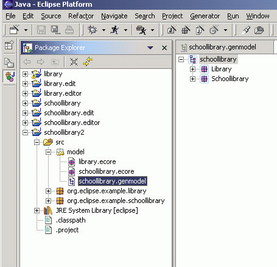
- Save
the change, and generate the model code, edit code and editor code.

- You should see the "schoollibrary2.edit" and "schoollibrary2.editor"
plugins in the Navigator view. Expand them and you should see both the "library"
and "schoollibrary" models generated in them.
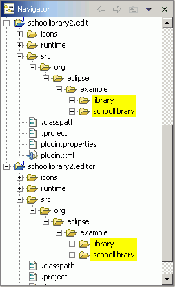
Running the Generated Editor
- Now, switch to the Debug perspective and create
a new Launch Configurations dialog. Select "Run/Run..." to bring up the Launch Configuration.
Select "Run-time Workbench" and click "New".

- Give
the configuration a name and switch to the "Plug-ins and Fragments" tab.
Select the "Choose plug-ins and fragments to launch from the list" radio
button. Next, select the set of plugins you just created. Click the "Apply"
button.

- You can now run this configuration by clicking the "Run" button. You
should find that the schoollibrary editor behaves the same as the editor we generated the
other way.
- You
can also create a Library model: Select "File/New/Other...". In the dialog
that appears, select "Example EMF Model Creation Wizards" and then select
"Library Model". Click the "Next" button.
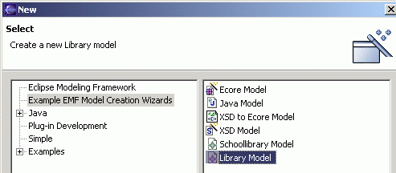
- Give the library model a name and click the "Next" button.
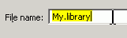
- Select "Library" as the top-level object. Click the "Finish" button.

- The model "My.library" will be opened in the main view. Expand the
model and right-click on the top-level "Library" object. Select the "New Child"
menu item and you will see three type of children objects that can be created. Note that
"School Book" is included, even though it is in the "Library" package.
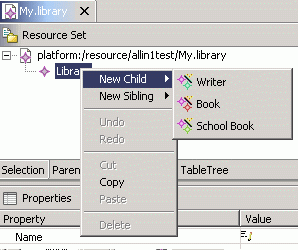
The "School Book" object is not available when the "Library" model is
generated on its own as in the previous tutorial because it does not know
about the existence of the "schoollibrary" package when the model is being generated. Now when the base package
and the extended package are generated into the same project, they know
about each other.
This feature occurs when multiple packages are generated together.
Top
Previous: Modifying the Editor
Next